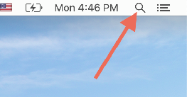
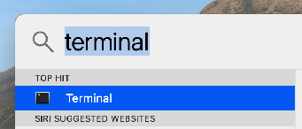
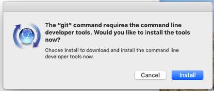

Open Spotlight by pressing command-space, or by clicking the magnifying glass icon in the far upper right of your screen:
Type the word “Terminal” into the search box that appears.
The “top hit” should be an application called Terminal. Open it. 
In the window that appears, type the following:
git --version⚠️ CAUTION ⚠️ Be careful to type exactly what you see: a space after the word “git,” then two dashes, then no space before the word “version.” All of that matters.
Press return.
If you see a message like this:
Last login: Wed Aug 13 11:23:58 on ttys000 dan@macos ~ % git --version
git version 2.48.1 (Apple Git-128) dan@macos ~
...where it says “git version” followed by a version number, then you already have git and you should skip to the next section.
If and only if you see a big error message that includes “No developer tools found” or “invalid active developer path,” then do the following:
sudo xcode-select --reset
xcode-select --install
You should now see a message like this.
Click Install and follow the instructions.

If you get a message about being unable to reach a server, please skip to the FIXME “If you are using Windows” section, below, and install git directly from http://git-scm.com/downloads
The installation will take a few minutes. When it’s done, go back to
that Terminal window and try typing git --version again.
You should now get a version number like the screenshot above.